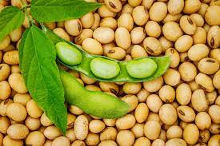

Soja
Origem da soja
A soja que hoje cultivamos é muito diferente dos seus ancestrais, que eram plantas rasteiras que se desenvolviam na costa leste da Ásia, principalmente ao longo do rio Yangtse, na China.Sobre
A soja é uma semente oleaginosa que pertence à família das leguminosas.
É caracterizada por ser rica em compostos fenólicos, como as isoflavonas, que possuem uma estrutura e ação semelhante aos estrógenos humanos e, por isso, é um excelente alimento que pode ser incorporado na alimentação para ajudar a aliviar os sintomas da menopausa.Benefícios
Essa leguminosa também é rica em antioxidantes, que ajudam a proteger o organismo e prevenir algumas doenças crônicas, como o câncer. A soja é rica em proteína vegetal, de forma que é amplamente consumida em dietas vegetarianas e em dietas para perder peso e ganhar massa muscular.Derivações
A soja pode ser consumida na forma de grãos, mas também existem produtos preparados a base desse alimento, como farinhas, bebidas vegetais, tofu, proteína de soja, molho de soja, óleo de soja, entre outros.No Brasil
A importância da soja no Brasil é indiscutível, visto que o grão foi o produto mais exportado pelo país em 2020. Além disso, 2020 ficou marcado também como o ano em que nos tornamos o número 1 em produção e exportação de soja.Na safra 2016/2017, a cultura ocupou uma área de 33,89 milhões de hectares, o que totalizou uma produção de 113,92 milhões de toneladas. A produtividade média da soja brasileira foi de 3.362 kg por hectare.
